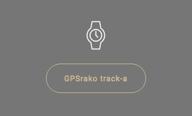
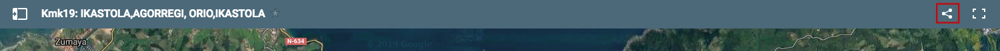

-
Irabazi kamiseta bat!
Kamisetak irabazteko arauak:
Webgune honetan HHrako, LHrako eta DBHrako hiruna ibilbide proposatzen dira. Dagokion mailan hiru ibilbideak egiten dituenak, kamiseta bat izango du opari! Kamiseta jasotzeko HH-koek HH-koentzat prestatuko ibilbideen egiaztagiria erakutsi beharko dute; LHkoek LHkoentzat prestatutakoarena; eta DBHkoak DBHkoentzat prestatutakoarena.
Dibertsitate funtzionalen bat duten ikasleek, eta HH, LH edo DBH egiten ari direnek, webgunean proposatzen diren bi ibilbideak egin beharko dituzte, hasieran argazki bat aterata, ibilbidearen erdigunean dagoen erreferentziazko puntu batean beste bat eta amaieran beste bat aterata.
Arauak:
- Ibilbidearen hasieran, ikastolan, argazki bat atera; ibilbide bakoitzak duen tontorrean beste argazki bat atera; eta amaieran beste argazki bat.
- Hiru ibilbidetako argazkiak dauzkazunean, kmk19komunikazioa@zarauzkoikastola.net helbidera bidali.
- Helbide honetatik oniritzia jasotakoan, dendan zain izango duzue kamiseta!
Oharra: kamisetak mugatuak dira. Amaitu arte banatuko dira.
Nola erabili:
Ibilbide hauek egiteko hiru baliabide jartzen ditugu zure esku:
- Testu eta argazkiak
Bidearen nondik norakoa esplikatzen dituen testu eta argazkiak daude, ibilbidearen maparekin batera jarraitzeko. Kolore desberdineko testuetan klikatuaz informazio gehigarria azaltzen da. - GPSrako track-a
Ibilbidearen track-a jaisteko aukera dago, ondoren GPS gailuan gorde eta erabiltzeko.
 - Mapa
Mapa mugikorrean partekatu eta ondoren mugikorretan dauden maps aplikazioak erabiliaz ireki. Klikatu mapan dagoen hiru puntu txiki dituen irudian eta partekatu adibidez google+ erabiliaz, zure mugikorrera. Horrela bidean ondo zoazen jakingo duzu.
